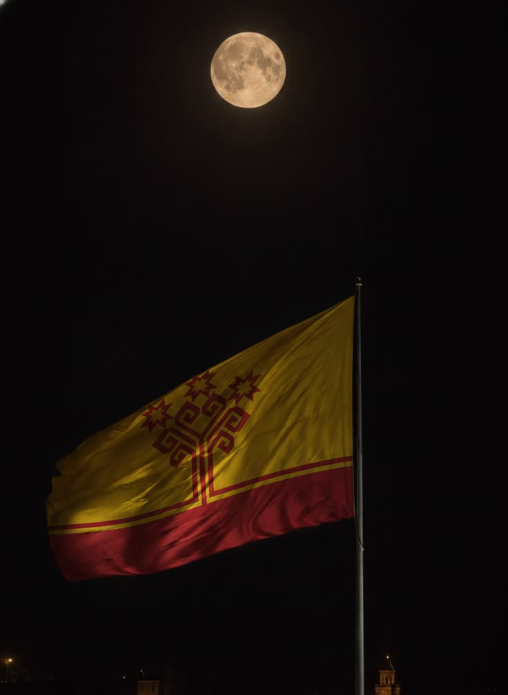

Столица Чувашии, где волжские просторы встречаются с древней культурой. Залив, монумент Матери-Покровительницы, музеи и национальная кухня — всё в одном городе.
Центральный парк с аттракционами, верёвочным городком и ручными белками. Отличное место для семейного отдыха и прогулок в тени деревьев.
🎡 Парк «Амазония»
Большой этнокомплекс с колесом обозрения, аквазоной и множеством развлечений. Находится рядом с набережной, идеально для активного отдыха.
🕊️ Мемориальный парк Победы
Самая высокая точка города с панорамным видом на Волгу. Здесь находится музей военной техники под открытым небом и Вечный огонь.
🗿 Этнопарк «Сувар»
Музей под открытым небом в Заволжье. Более 100 деревянных скульптур, рассказывающих о чувашской мифологии и культуре.
Культура Чувашии
Традиции, праздники и язык — то, что делает город особенным.
🎉 Акатуй
Праздник плуга, отмечаемый летом. Символизирует окончание весенне-полевых работ. Сопровождается песнями, танцами, борьбой и национальными угощениями.
🍲 Кухня
Шурпе — наваристый суп с мясом и субпродуктами. Хуплу — пирог с мясом и картофелем. И, конечно, чувашское пиво — часть национальной традиции.
🧵 Вышивка
Чувашская вышивка — объект нематериального культурного наследия ЮНЕСКО. Узоры служили оберегами и передавались из поколения в поколение.
🗣️ Полезные фразы на чувашском
Ыра кун!Добрый день!
Тавтапуҫ!Спасибо!
Мӗнле пурăнатăр?Как дела?
Сывă пул!До свидания!
🎨 Цвета чувашской вышивки
Красный Счастье, любовь
Жёлтый Солнце, радость
Зелёный Природа, жизнь
Белый Чистота, правда
Чёрный Земля, труд
🧠 Мини-квиз: знаете ли вы Чувашию?
1. В каком году Чебоксары впервые упомянуты в летописях?
2. Как называется главный праздник чувашского народа?
3. Какой монумент является символом Чебоксар?
4. Что такое «шурпе»?
5. Какова примерная длина светового моста через залив?
Народный календарь Чувашии
Традиционные праздники и обряды чувашского народа. Даты большинства событий зависят от народного лунно-солнечного календаря и сезона, поэтому для них указываются периоды, а не фиксированные числа. Отсчёт до даты показывается только там, где её можно вычислить точно.
Чебоксары — город, который часто называют «жемчужиной Поволжья» за чистоту, ухоженные парки и спокойный ритм жизни. Здесь древние храмы соседствуют с современными набережными, а национальная культура чувствуется в каждом узоре и каждом блюде.
Официальная символика
Герб и флаг Чебоксар — отражение истории и характера города.
Герб города
Серебряный щит с пятью летящими утками (символ свободы и изобилия), тремя дубами (сила и вечность) и датой «1469» — годом первого упоминания. Увенчан тремя звёздами с девизом «Были, есть и будем».

Флаг города
Белое полотно с изображением герба в центре. Утверждён 14 июня 2001 года. Белый цвет традиционно символизирует чистоту и мир.